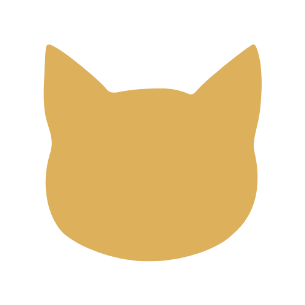
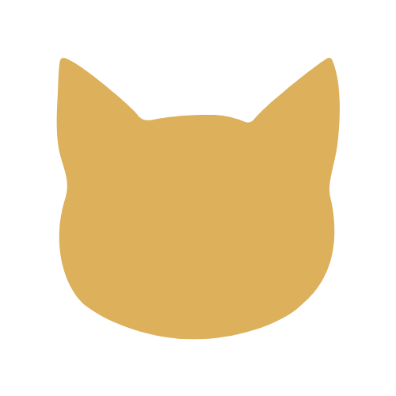

Como jogar?
Ao decidir qual mapa será explorado, você deverá escolher o trimestre que deseja. Já dentro do trimestre, você poderá navegar pelas atividades pelos botões azuis, e pelos trimestres pelos botões amarelos

Ao decidir qual mapa será explorado, você deverá escolher o trimestre que deseja. Já dentro do trimestre, você poderá navegar pelas atividades pelos botões azuis, e pelos trimestres pelos botões amarelos
 
